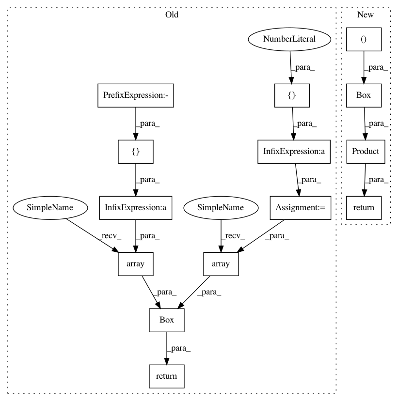

4e2a5cb241b8cd957a1ff08787c4304426dc4a86,cistar-dev/cistar/envs/lane_changing.py,SimpleLaneChangingAccelerationEnvironment,action_space,#SimpleLaneChangingAccelerationEnvironment#,19
Before Change
//
// return Product([acc_space, direction_space])
lb = [-abs(self.env_params["max-deacc"]), -1, -1] * self.scenario.num_rl_vehicles
ub = [self.env_params["max-acc"], 1, 1] * self.scenario.num_rl_vehicles
return Box(np.array(lb), np.array(ub))
@property
def observation_space(self):
After Change
2) lane change to index +1
:return:
acc_space = Box(low=-abs(self.env_params["max-deacc"]),
high=self.env_params["max-acc"],
shape=(self.scenario.num_rl_vehicles,))
direction_space = Product(*[Discrete(3) for _ in range(self.scenario.num_rl_vehicles)])
return Product([acc_space, direction_space])
// lb = [-abs(self.env_params["max-deacc"]), -1, -1] * self.scenario.num_rl_vehicles
// ub = [self.env_params["max-acc"], 1, 1] * self.scenario.num_rl_vehicles
// return Box(np.array(lb), np.array(ub))
In pattern: SUPERPATTERN
Frequency: 3
Non-data size: 14
Instances
Project Name: flow-project/flow
Commit Name: 4e2a5cb241b8cd957a1ff08787c4304426dc4a86
Time: 2017-06-09
Author: eugenevinitsky@airbears2-10-142-37-84.airbears2.1918.berkeley.edu
File Name: cistar-dev/cistar/envs/lane_changing.py
Class Name: SimpleLaneChangingAccelerationEnvironment
Method Name: action_space
Project Name: flow-project/flow
Commit Name: 93a7f518a7eefd0d5492f8c77b253d7f40af3b4f
Time: 2017-06-10
Author: akreidieh@gmail.com
File Name: cistar-dev/cistar/envs/lane_changing.py
Class Name: SimpleLaneChangingAccelerationEnvironment
Method Name: action_space
Project Name: flow-project/flow
Commit Name: 6675ef7ddc08ab25eb6545943c7f4cc0234b62ee
Time: 2017-08-03
Author: akreidieh@gmail.com
File Name: cistar-dev/cistar/envs/braess_paradox.py
Class Name: BraessParadoxEnvironment
Method Name: action_space
Project Name: flow-project/flow
Commit Name: 4e2a5cb241b8cd957a1ff08787c4304426dc4a86
Time: 2017-06-09
Author: eugenevinitsky@airbears2-10-142-37-84.airbears2.1918.berkeley.edu
File Name: cistar-dev/cistar/envs/lane_changing.py
Class Name: SimpleLaneChangingAccelerationEnvironment
Method Name: action_space